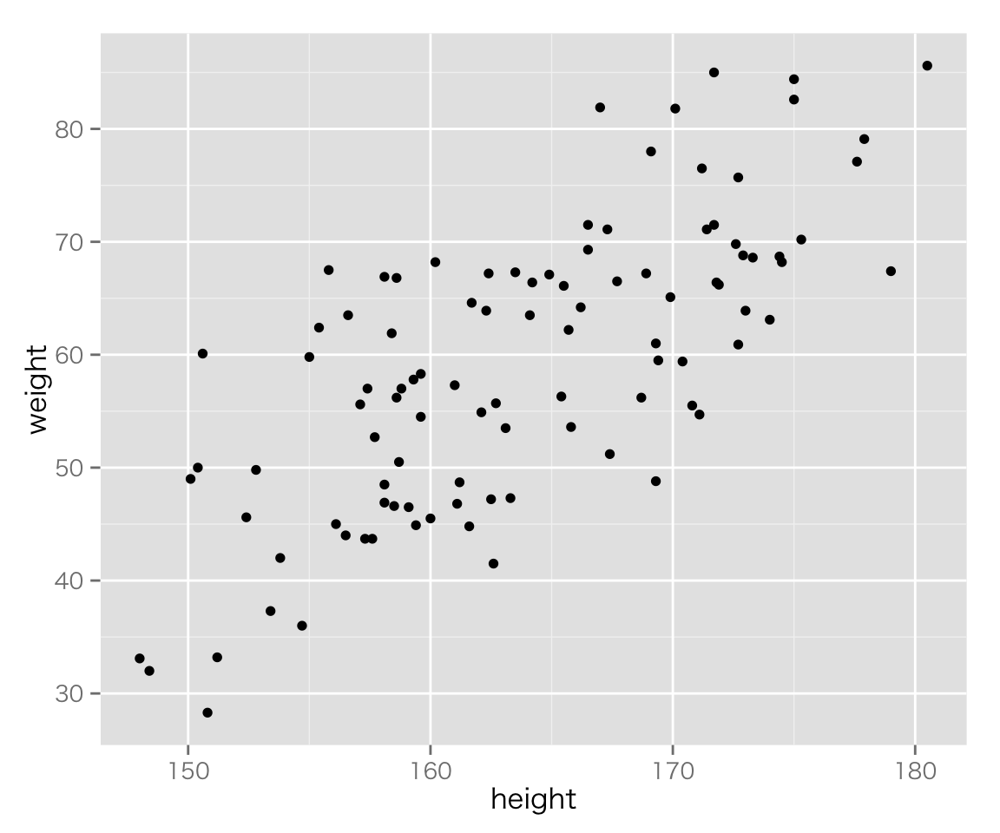

このページでは、Rを使いながら統計学の基礎を復習する。 1回の授業で復習する範囲には限りがあるので、だいぶ大雑把な説明になっている。 基礎に不安がある場合は、シラバスに記載されている統計学の参考書で復習すること。
データを読み込む前に、setwd()で作業ディレクトリ（フォルダ）を指定する。 たとえば、ホームフォルダの中に“methods”というフォルダを作り、それを作業ディレクトリに指定するなら、
setwd('~/methods/')とする。RStudio を使うときは、Project を指定すれば自動的に作業ディレクトリが指定される。 現在の作業ディレクトリを確認したいときはConsole（プロンプト）でgetwd() と入力する。
次にデータセット fake-data-lec02.csv をダウンロードして指定した作業ディレクトリに保存する。
RのConsole（プロンプト）にdir() と入力し、使いたいデータが現在の作業ディレクトリにあるかどうか確認する。 確認できたら、read.csv()を使い、データセットを読み込んで名前（ここでは myd）を付ける。
myd <- read.csv("fake-data-lec02.csv")読み込んだデータを確認してみよう。 まず、データセットの最上部または最下部にある6行分だけを表示する。
head(myd) ## 最初の6行分## id sex age height weight income
## 1 1 male 52 174.0 63.1 3475810
## 2 2 male 33 175.3 70.2 457018
## 3 3 male 22 175.0 82.6 1627793
## 4 4 male 33 170.1 81.8 6070642
## 5 5 male 26 167.4 51.2 1083052
## 6 6 male 37 159.3 57.8 2984929tail(myd) ## 最後の6行分## id sex age height weight income
## 95 95 female 21 165.4 56.3 1339138
## 96 96 female 65 161.1 46.8 6127136
## 97 97 female 45 161.2 48.7 1062663
## 98 98 female 53 166.2 64.2 10154200
## 99 99 female 43 158.1 48.5 8287163
## 100 100 female 48 153.8 42.0 1125390データセットに含まれる変数名を確認したいときは、
names(myd)## [1] "id" "sex" "age" "height" "weight" "income"とする。
データセットに含まれる観測数 (\(n\)) と変数の数を知りたいときは、
dim(myd)## [1] 100 6とする。最初の数字が\(n\)の数（データセットの行数）、2番目の数字が変数の数（列数）である（RStudio を使うと、右上のウィンドウの“Environment” というタブに、この情報が表示される）。
データセットの構造を確認するには、
str(myd)## 'data.frame': 100 obs. of 6 variables:
## $ id : int 1 2 3 4 5 6 7 8 9 10 ...
## $ sex : Factor w/ 2 levels "female","male": 2 2 2 2 2 2 2 2 2 2 ...
## $ age : int 52 33 22 33 26 37 50 30 62 51 ...
## $ height: num 174 175 175 170 167 ...
## $ weight: num 63.1 70.2 82.6 81.8 51.2 57.8 68.6 47.2 68.2 59.4 ...
## $ income: int 3475810 457018 1627793 6070642 1083052 2984929 1481061 1032478 1092943 3235943 ...とする（詳しい読み方は第5回の授業で）。
データセットに含まれるすべての変数の基本的な統計量を確認したいときは、
summary(myd)## id sex age height
## Min. : 1.00 female:50 Min. :20.00 Min. :148.0
## 1st Qu.: 25.75 male :50 1st Qu.:36.00 1st Qu.:158.1
## Median : 50.50 Median :45.00 Median :162.9
## Mean : 50.50 Mean :45.96 Mean :163.7
## 3rd Qu.: 75.25 3rd Qu.:57.25 3rd Qu.:170.2
## Max. :100.00 Max. :70.00 Max. :180.5
## weight income
## Min. :28.30 Min. : 240184
## 1st Qu.:48.95 1st Qu.: 1343679
## Median :59.95 Median : 2987818
## Mean :59.18 Mean : 4343425
## 3rd Qu.:67.33 3rd Qu.: 6072696
## Max. :85.60 Max. :23505035とする。
以下では、図を描くために ggplot2 というパッケージを使う。 インストール済みでない場合は、まず
install.packages("ggplot2")とする。.Rprofile 等で普段使うレポジトリを指定していない場合、どのミラーからファイルをダウンロードするか訊かれるので、自分に近いところを選ぶ。
インストールが済んだら、library() を使ってggplot2 パッケージを読み込む（require() でもよい）。
library("ggplot2")
## 次の行は、Mac ユーザ用。Windows ユーザは実行しないように
theme_set(theme_gray(base_size=12, base_family="HiraKakuProN-W3"))ggplot2 の詳しい使い方は第4回の授業で説明するので、今回はとりあえず以下のコードを真似て（そのままコピペして）図を作ってみよう（例として使われている変数だけでなく、他の変数でも試してみること）。
まず、身長 (height) のヒストグラムを作る。
p1 <- ggplot(myd, aes(height))
p1 + geom_histogram()作った図を保存したいときは、ggsave()を使う たとえば、
ggsave('height-histogram.pdf')とすると、最後に作った図が height-histogram.pdf という名前のPDFファイルとして保存される（PNGファイルとして保存したいときは“.pdf” を “.png” に変えればよい）。 RStudio では、右下にあるウィンドウのPlots タブに保存したい図を表示し、Export で保存することができる。
ちなみに、ggplot2 を使わない場合は、
hist(myd$height, xlab = "身長", ylab = "度数", main = "", col = "gray")のようにヒストグラムが描ける （見栄え・美しさはともかく、ggplot2を使う場合と使わない場合でヒストグラムの見た目が違うのはなぜか考えよ）。
デフォルトでは縦軸が度数 (count, frequency) である。これを確率密度 (probability density) に変えてみよう。
p1 + geom_histogram(aes(y =..density..)) ggplot2を使わない場合は、
hist(myd$height, probability = TRUE, col = "gray",
xlab = "身長", ylab = "確率密度", main ="")とする。
ヒストグラムは階級幅によって見た目が変わるので、色々変えてみる必要がある。 幅を5に変えてみよう。
p1 + geom_histogram(binwidth = 5)これでggplot2を使わない場合のヒストグラムと似たような形になった。
ここまで作ったヒストグラムは、男女のデータを一緒に扱っている。 男女を分けて描くとどうなるだろうか。
p1 + geom_histogram(binwidth = 5) + facet_wrap( ~ sex)続いて、身長の箱ひげ図を男女別に描いてみよう。
p2 <- ggplot(myd, aes(sex, height))
p2 + geom_boxplot() 今度は、身長と体重 (weight) の関係を散布図を使って確認してみよう。
p3 <- ggplot(myd, aes(height, weight))
p3 + geom_point()
ここでも、男女を色分けして区別しよう。
p3 + geom_point(aes(color = sex))次に、身長と体重の関係を、（男女別に）直線で示してみよう。
last_plot() + geom_smooth(method = 'lm', se = FALSE, aes(color = sex))最後に、所得 (income) も同時に図示してみよう。
p3 + geom_point(aes(color = sex, size = income))変数（ベクトル）\(x\)の平均値（算術平均, mean）は \(\bar{x}\) と表し（「エックスバー」と読む）、 \[ \bar{x} = \frac{\sum_{i=1}^n x_i}{n}\] である。 Rでは、
x <- rnorm(20, mean = 10, sd = 4) ## 変数xを正規分布からの無作為抽出で作る（後述）
sum(x) / length(x)## [1] 10.92204とすればよい。 しかし、平均値のような基本的な統計量を求める関数はあらかじめ用意されている。 平均値は、mean() で求められる。
mean(x)## [1] 10.92204これで、先ほど求めたものと同じ平均値が得られる。
中央値はmedian()、 最小値はmin()、 最大値はmax()で求める。
median(x)## [1] 11.46015min(x)## [1] 3.758847max(x)## [1] 17.5018また、分位数 (quantile) はquantile()で求める。 百分位数 (percentile) や四分位数 (quartile) を求めるときもこの関数を使えばよい。
## 50% quantile = 50th percentile = median
quantile(x, 0.5)## 50%
## 11.46015## 25th percentile = 1st quartile と 75th pecentile = 3rd quartile を同時に求める
quantile(x, c(.25, .75)) ## 25th percentile と 75th pecentile を同時に求める## 25% 75%
## 7.388303 13.452007したがって、四分位範囲 (IQR) は、
quantile(x, .75) - quantile(x, .25)## 75%
## 6.063704で求められる。用意されている関数を使い、
IQR(x)## [1] 6.063704でもよい。 五数要約は、
quantile(x, c(0, .25, .5, .75, 1)) ## 五数要約：四分位数を使うとき## 0% 25% 50% 75% 100%
## 3.758847 7.388303 11.460151 13.452007 17.501801とすればよい。 第1四分位数と第3四分位数の代わりに下側ヒンジと上側ヒンジ (Tukey 1977. Exploratory Data Analysis.) を求めたいときは、fivenum() を使う。
fivenum(x) ## 五数要約：ヒンジを使うとき## [1] 3.758847 7.332980 11.460151 13.489413 17.501801変数 \(x\) の不偏分散 (unbiased variance) は\(u_x^2\) と表し、 \[u_x^2 = \frac{\sum_{i=1}^n (x_i - \bar{x})^2}{n-1}\] である。 これをR で求めると、
sum((x - mean(x))^2) / (length(x) - 1) ## 計算の順序（カッコの付け方）に注意## [1] 15.8563とすればよい。 分散は最も重要な統計量であり、当然関数が用意されているので、var() で求めることができる。
var(x)## [1] 15.8563標準偏差 (standard deviation) は分散の平方根なので、
sqrt(var(x))## [1] 3.981996で求められるが、sd() を利用することもできる。
sd(x)## [1] 3.981996ベクトル\(x\) が標本ではなく母集団のとき、平均は\(\mu\)、分散は\(\sigma^2\) で表される。 母集団の平均値は、標本の場合と同様、
mean(x)## [1] 10.92204で求められる。 しかし、母集団の分散は \[\sigma^2 = \frac{\sum_{i=1}^N (x_i - \mu)^2}{N}\] なので、var() をそのまま使うことはできない。代わりに、
var(x) * (length(x) - 1) / (length(x))## [1] 15.06348とすればよい。 自分で関数を定義することもできる。
pop_var <- function(population) {
return(sum((population - mean(population))^2) / length(population))
}
pop_var(x)## [1] 15.06348R には無作為抽出を行うための関数が用意されている。
たとえば、最小値 \(a\)、最大値 \(b\) の連続一様分布 (uniform distribution) から無作為に\(n\) 個の値を取り出すには、 runif(n, a, b) とする。 試しに、\(n = 10, a = 0, b = 1\) でやってみると、
runif(10, 0, 1)## [1] 0.76401741 0.23080332 0.63237021 0.14812462 0.53277073 0.99347089
## [7] 0.86353601 0.07588093 0.67970091 0.54546642となる。 無作為抽出（正確には疑似乱数だが）なので、取り出される数字は毎回異なる。 したがって、もう一度同じコマンドを使うと、
runif(10, 0, 1)## [1] 0.059963873 0.570149334 0.741867192 0.341394698 0.081360438
## [6] 0.862470033 0.009746334 0.785903189 0.492587713 0.935312537のように、先ほどとは異なる数字が得られる。 乱数を使って論文やレポートを書くとき、同じ乱数を再現したい場合がある。そんなときは、set.seed() で乱数の種 (seed) を指定してやればよい。
set.seed(6785) ## 種を指定
runif(10, 0, 1)## [1] 0.4854073 0.7441611 0.9858194 0.9214636 0.3658675 0.7666149 0.8580320
## [8] 0.4644042 0.7479548 0.8613465set.seed(6785) ## もう一度同じ種を使う
runif(10, 0, 1) ## 同じ数字が得られる## [1] 0.4854073 0.7441611 0.9858194 0.9214636 0.3658675 0.7666149 0.8580320
## [8] 0.4644042 0.7479548 0.8613465一様分布以外の分布から無作為抽出するときも r分布名() という関数を使う。 正規分布ならrnorm()、\(t\) 分布はrt()、カイ二乗分布はrchisq() という具合である。 ただし、指定しなければならない母数（parameters) は分布によって異なる。 既に見たように、一様分布では最小値 (min) と最大値 (max) を指定するが、正規分布では平均値 (mean) と標準偏差 (sd)、\(t\) 分布やカイ二乗分布では自由度 (df) を指定する。
たとえば、平均\(\mu\)、分散\(\sigma^2\) の正規分布から無作為kに \(n\) 個の値を取り出すには、rnorm(n, mean = mu, sd = sigma) とする。平均が10、分散が4の正規分布から100個の値を取り出したいなら、
x <- rnorm(100, 10, 2)とする。
r分布名() の“r” を“d”に変えると確率密度 \(f(x)\) が、“p” に変えると累積分布関数\(F(x)\) が得られる。
中心極限定理によると、元の分布がどんな分布であっても、標本サイズ\(n\) が十分大きければ、誤差の分布（平均値の標本分布）は正規分布に近づく。 標本分布が正規分布で近似できると、統計的推定・検定を行う上でとても便利である。 たとえば、「\(\mu \pm 1.96 \sigma\) の間の値をとる確率が95%」という正規分布の特徴を使い、 平均値の95%信頼区間は \([\bar{x} - 1.96\mathrm{SE}, \bar{x} + 1.96\mathrm{SE}]\) という推定が可能になる（SE は標準誤差、つまり、標本分布における標準偏差）。 しかし、本当に\(n\) が大きくなると、正規分布で近似できるのだろうか？ シミュレーションで確かめてみよう。
0から9までの整数値が書かれたボールが1つずつ、計10個あり、それらが1つの袋の中にあるとしよう。 袋から1つのボールを取り出すとき、取り出したボールに書かれている数がとり得る値は10通りで、どの値をとる確率も等しい。 したがって、そのような値の分布は離散一様分布である。 このとき、とり得る値の平均値は4.5である
ここで、ボールに書かれた数を知らないと仮定しよう。 私たちは、袋から\(n\) 回ボールを取り出し、出た数字の平均値を用いて本当の平均値（母平均）を推定する。 ただし、ボールは1度に1個しか取らず、1度取り出したボールは次のボールを取り出す前に袋に戻すことにする（復元抽出, sampling with replacement）。
このような方法でボールを取り出すとき、標本分布がどのようになるかシミュレーションで確かめる。
まず、ボールの入った袋を用意する。
bag <- 0:9次に、何通りの標本を取り出すか（標本数）と、1つの標本で取り出すボールの数（標本サイズ）を決める。
trial <- 1000 ## 標本数：もっと大きくしてもよい
n <- 1 ## 標本サイズ：とりあえず1にしてみる続いて、結果（標本分布）を保存するためのベクトルを用意する。 ベクトルの長さ（要素の数）は、標本数に合わせる。 ベクトルの中身は欠測値 NA にしておく （はじめは結果が空なので、欠測値を使う。最終的に欠測値が残っていたら、シミュレーションがうまくいかなかった [コードに誤りがある] ということがわかる）。
sample.means <- rep(NA, trial)準備ができたので、シミュレーションを行う。 毎回の標本抽出にはsample() 関数を使う。 そのとき、復元抽出を行うためにreplace = TRUE を指定する。 1つの標本（サイズは\(n\)）を抽出したら、その標本の平均値を計算し、それをsample.means に保存する。 これをfor ループを使って標本数の分だけ繰り返す。 Rのコードは以下のようになる。
for (i in 1:trial) {
balls <- sample(bag, size = n, replace = TRUE)
sample.means[i] <- mean(balls)
}これで、sample.means にシミュレーション結果が保存された。 ヒストグラムを描いて分布（擬似的な標本分布）を確認してみよう。
hist(sample.means, prob = TRUE, col = "gray", axes = FALSE,
breaks = 0:10, right = FALSE,
xlab = "標本平均", ylab = "",
main = "一様分布の平均値の標本分布：標本サイズn=1")
axis(1, 0.5:9.5, labels = 0:9)
abline(v = 5, col="red", lwd = 2) ## 母平均に印をつけるこれは正規分布に近いだろうか？ \(n\) が小さい (\(n=1\)) ので、正規分布（に近いもの）ではなく、元の分布である一様分布が再現されている。
では、\(n\) を少しずつ大きくしていくとどうなるだろうか？ 各自で確かめよう！（今週の課題を参照）